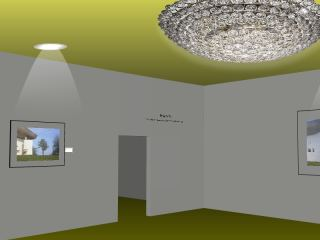

Exhibition designer view
The purpose of the Exhibition designer view
is the design of physical photographic exhibitions. The sequence and
arrangement of images can be tried out before actually hanging them.
Images can be placed on virtual Walls. In addition, a resolution check is performed for each image. A too low resolution will result in a warning.
The Exhibition designer view
contains one or several Walls. Simply place images on the walls by dragging them from a gallery to a wall. By pressing Ctrl
when dragging images over an existing wall image the new images will
replace the wall image. Otherwise they are simply added to the wall.
By using drag
& drop you may rearrange the images freely - even between walls. Images can be deleted
by dragging them over the top border of the view.
Each
image is equipped with a handle in the top right corner and a label on
the right side of the image. The label displays data as usually shown on
exhibition labels. All label entries are editable. Simply click on an entry to edit it.
The
handle can be dragged to adjust the size of the image. A warning
appears on the label if the image becomes too large for the given
resolution.
View actions
- Exhibition Properties (). Shows the dialog with the exhibition properties (see below).
- Synchronize (
 ). Toggles synchronization mode. If this mode is set the selected image will be shown in the current collection (if present), too.
). Toggles synchronization mode. If this mode is set the selected image will be shown in the current collection (if present), too. - Add wall (
 ). Adds a new wall to the exhibition and shows a dialog with the Wall Properties. Each wall contains two buttons in the lower left corner: one to delete the wall, and one to edit the wall properties.
). Adds a new wall to the exhibition and shows a dialog with the Wall Properties. Each wall contains two buttons in the lower left corner: one to delete the wall, and one to edit the wall properties. - Generate virtual exhibition (
 ).
Generates a web site with a 3D virtual exhibition that can be run in
any HTML5 enabled web browser (Internet Explorer 9 or above
recommended). Make sure that the floorplan of the exhibition, the wall height and the default viewing height are well defined.
).
Generates a web site with a 3D virtual exhibition that can be run in
any HTML5 enabled web browser (Internet Explorer 9 or above
recommended). Make sure that the floorplan of the exhibition, the wall height and the default viewing height are well defined.

You may generate several exhibitions into the same folder (aka web site). Each exhibition will be generated as a separate exhibition room and the user will be able to switch easily between these rooms.
Navigation
Navigation is similar to the Sleeves view.
Just drag the whole area to pan. Make sure that the cursor is not positioned on an image when starting dragging. Ctrl
accelerates the panning operation. All other modification keys (except
the zoom key, see below) can be used to force panning, even is the
cursor is positioned on an image.
You
can adjust the viewing distance by pressing the zoom key (ALT or Shift key or the right mouse button depending on the preference settings) and
dragging left or right.Alternatively, you
may zoom using the mouse wheel.
A
double click on a wall background zooms out so that all walls are
visible. A double click on an image label zooms to that label, so that
it can be edited conviniently. Another double click restores the former view.
Exhibition properties
- Overview
- Exhibition
- Name. The name of the exhibition.
- Description. Short description of the exhibition (Location, Time schedule, etc.).
- Info plate
- Text. Information text to be displayed on an info plate within the exhibition.
- Position.
Determines where the info text is shown: left or right of the door, or
not at all. The info plate also contains the name and the names of the
artist(s).
- Show credits. Mark this field to show credits derived from the images on the info plate
- Layout.
Here
you can define layout default values that apply to all exhibits of the
exhibition. Some of these values can be overridden individually for
each exhibit. - Default viewing height. Where the image is placed when you drag it onto a wall.
- Variance. A value by which the default viewing height is varied randomly when dropping image onto a wall.
- Mat and frame
- Mat color. The color of the mat, if any.
- Mat width. The mat with from image border to frame. Set to zero if the image is not mounted on a mat.
- Frame color. The color of the frame, if any.
- Frame width. The width of the frame. Set to zero for unframed images.
- Label
- Font. The label size will adjust automatically to the chosen font.
- Sequence. Select the sequence of title, description, and credits.
- Default text. This text will be filled into the label of each new exhibit.
- Hide. By default all labels are hidden if this option is checked.
- Alignment. Defines the spatial relationship of the label to the image.
- Distance. The distance of the label from the border of the image.
- Indent. How much the label is shifted along the border of the image.
- Grid.
- Show grid. Shows a grid on each wall.
- Grid size. Distance between grid lines.
- Snap to grid. Images will automatically adjust to the grid if they are placed near grid lines.
- Details.
This section displays image and frame data for each wall including position
and size and the resolution in dpi. These values can be printed or outputted to PDF.
- Floorplan. Here you can
define the spacial layout of the exhibition walls. Select a wall or the
entrance (circle) and enter the coordinates and - in case of a
wall - the angle. You may also click on the ends of the walls and drag them with the mouse or nudge them with the arrow keys.
- Web Design.
This section is only relevant for generated virtual exhibitions. - Colors
- Ground. The color of the floor.
- Horizon. The color of the horizon
- Ceiling. The color of the ceiling
- Media
- Audio track. An audio track to be played with the exhibition
Note: Current Firefox versions cannot handle MP3 audio tracks.
- Name plate. This can be a GIF-, JPEG-, or PNG-image that will be placed at the very top of the page.
- Output.
This section is only relevant for generated virtual exhibitions. - Output Target
- Local folder. Please select an output folder for the generated web gallery if the output is to be created locally.
- FTP directory. Please select an existing FTP account or create a new one if you want to upload the output via FTP.
- Web Link. This is the name of the entry web page into the generated web gallery. The default is "index.html".
- Keywords. Specify keywords to be inserted into the header of the generated entry web page.
- Output quality. You can influence the Output Quality with these setttings.
- Create watermarks.
Adds a copyright notice to each single picture in form of a watermark.
The copyright property of the image will be used for the watermark. If
the image does not specify an own copyright, the exhibition copyright (below) is used instead.
- Copyright.
Please specify a copyright remark here (the copyright that applies to
the complete exhibition, not to the single images). The copyright remark will
be inserted into the footer of the generated web page.
- Contact. A contact name that will be displayed in the footer of the generated web page.
- Email. An email address for contact. The contact name will be equipped with an email link to that address.
- Web URL.
A web URL that will be displayed in the footer of the generated plate.
If specified, also the name plate will be equipped with a link to that
page.
Wall properties
- Location. Describe where the wall is located.
- Dimensions. Width and height of the wall in meters.
- Wall color. Select a background color for the wall.
Context menu
To
obtain the context menu, right click an image or the wall background.
- Jump to image. Jumps to an image selected from a list.
- Jump to last selected. Jumps to the image that was most recently selected.
- View image fullscreen. Shows the image in full resolution.
- Mark as sold / Remove sold mark. Sets or resets a visual indicator that the exhibit is sold.
- Modify. Edit or rotate the image.
- Delete. Removes the selected images from the exhibition.
- Cut. Removes the selected images from the exhibition but keeps them in the application clipboard.
- Paste. Pastes images from the clipboard to the mouse position.
- Show folder. Shows the selected image in its file system folder.
- Show in timeline. Shows the selected image in its timeline collection.
- Show in map. Shows the selected image in the map view (only with geo-coded images)
- Play voice note. Plays the voicenote attached to the image, if any.
- Layout. Edit image layout.
- Edit wall properties. Modify the properties of a single exhibition wall.
- Delete wall. Remove a whole wall from the exhibition.
Tip
Hanging images becomes much easier if you don't position adjoining images at the same height.